A Survey of Deep Semantic Segmentation on Computed Tomography
Acknowledgement: This survey is one of the assignments I’ve done in the course CSCI 8980 offered by Prof. Ju Sun at the University of Minnesota in Fall 2020.
Abstract
In this survey, we aim to provide a thorough overview of recent studies in semantic segmentation on medical imaging analysis, especially on Computed Tomography (CT). We mainly point out the intuitive novelty of architectural design of each neural network popular in the field, as well as the loss functions used in mainstream researches. Further, we introduce the particular image format in CT, discuss some challenges and present potential future directions that are promising for semantic segmentation in medical imaging.
Introduction
Semantic Segmentation has been one of the most important tasks within deep learning community, and many papers have shown that Deep Neural Networks (DNNs) are sufficient to gain a relatively good performance based on natural images. Lateef and Ruichek (2019) in their survey summarized many neural network designs, datasets, and methods for semantic segmentation of natural images. Guo et al. (2017) provided a review on deep-learning-based semantic segmentation and mainly focused on literature of fully convolutional networks (FCNs) and weakly supervised methods.
In recent years, medical computer vision has been one of the most critical areas in active scientific research. Within medical domain, medical imaging analysis with semantic segmentation can be used to improve radiological diagnostics by human-machine interaction, radiotherapy, etc. Taghannaki et al. (2019) provided a high-level review of the adoption of methods and architectural networks for medical imaging segmentation from natural imaging segmentation. Hesamian et al. (2019) listed out the state-of-the-art (SOTA) architectural designs of DNNs in medical imaging segmentation, and covered some practical training tricks. In this survey, we’re contributing to explain the intuitive of architectural design of each novel component module to the existing convolutional neural networks (CNNs), as well as the basic understanding of most commonly used loss functions.
CT Imaging Data
Before we dive into deep learning techniques, we have to be familiar with the coordinate systems that are being used in medical imaging including CT scans, and how to prepare them to fit into DNNs as inputs.
Coordinate Systems
In most of the medical imaging applications, there are three commonly used coordinate systems, which are world, anatomical and medical image coordinate systems (see Figure 1). The world coordinate system is the cartesian coordinate system in which the medical imaging modality is positioned. Each modality has its own world coordinate system, including different CT scanners.
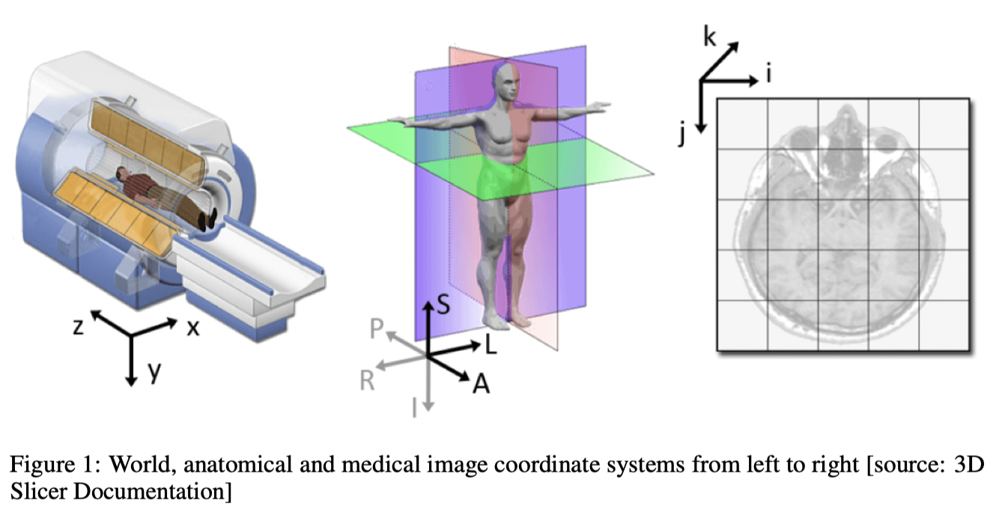
The most frequent coordinate system involving in medical imaging conversation among doctors, radiologists, and deep learning scientists is the anatomical coordinate system, which is also called patient coordinate system. It includes axial, sagittal, coronal planes to describe the standard anatomical position of a human. Furthermore, the 3D position is defined along anatomical axes of anterior-posterior (front-back), left-right and inferior-superior. For example, the axial plane practically refers to the slices you can see along with inferior-superior axis when looking down. For clinical consistency, a slice near to the head is as superior, while a slice near to the feet is as inferior. The sagittal plane is what you see from left to right, from which you can see the ears of patients, and coronal plane travers from anterior to posterior of the patients, or vice versa. In practice, there are two different anatomical coordinate system named LPS and RAS, where LPS is used by DICOM and ITK toolkit of Python, and RAS is used by other medical softwares such as 3D slicer.
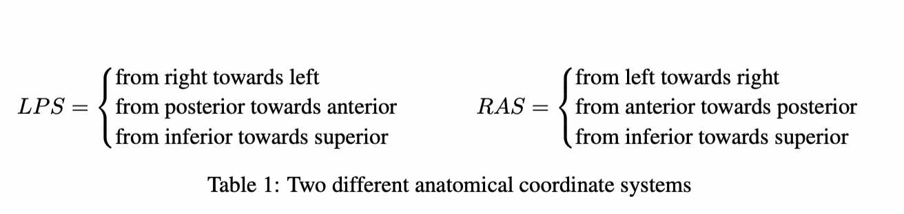
The medical image coordinate system is what we’re familiar with as voxel space, which is also the coordinate system of ideal input for most of the deep neural networks. Notably, the pixel depth of each slice can fall in the range of 0 to , compared with 0 to
in many natural imaging datasets.
DICOM
DICOM is a medical format which is successfully integrated in medical imaging modalities manufactured by different vendors, and it has been naturally becoming the industry standard. It not only stores the medical image data but also meta-data of a patient, which includes demographic information (e.g., name, age, gender), acquisition data (e.g., type of modality used and its setting) and the context of imaging study (e.g., patient’s historical record) according to the article posted by Adaloglou (2020). DICOM is meanwhile a network protocol, which makes it easier to share information within hospital networks, but that’s out of the scope of this survey. We’re mostly interested in knowing our data and how to process them in order to fit into the training model.
Currently, due to variety of modalities there is not a universal tool that can load the imaging part of DICOM into an 3D Numpy array. However, there are two Python tools named dcm2nixx and Pydicom that can help us to manipulate DICOM folders and convert DICOM files into Nifty (.nii) data, from which we can use a Python library called Nibabel to load nifty data into 3D Numpy array. Nifty format is also used in the dataset of many medical imaging challenges nowadays. However, the preprocessing requires lots of labors because the real-world medical data are often messy. For instance, each folder may only contain one DICOM file which is only a 2D CT slice of a CT volume, and exams of different modalities are likely to fall into different folders.
Network Architecture Progression
Fully Convolutional Network (FCN)
Long et al. (2014) proposed the Fully Convolutional Network (FCN), which was one of the first neural networks that brought out a new way of looking at semantic segmentation problems. Before FCN, people generally used combining convolutional layers and fully connected layers to construct the network, but apparently it doesn’t fully make use of contextual spatial information of images. Long et al. (2014) proposed replacing fully connected layers with all convolutional layers (see Figure 2), with the strategies of up-sampling (transposed convolution) and feature fusion. The outputs of FCNs are directly predicted masks, and it greatly improves both testing accuracy and training efficiency in semantic segmentation problems. Christ et al. (2016) achieves Dice score over 94% for liver with computation time below 100 second per CT volume with a Cascaded FCN in MICCAI 2016.
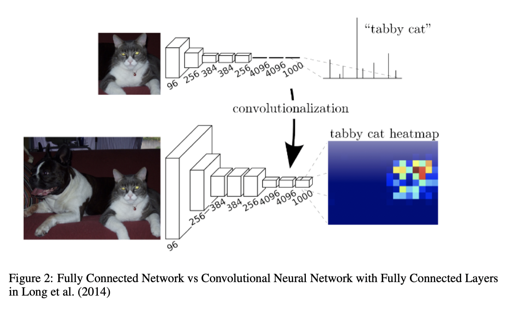
Encoder-decoder Network
SegNet
SegNet proposed by Badrinarayanan et al. (2015) is similar with FCN in design, but is different in up-sampling techniques. FCNs perform feature fusion in the output after transposed convolution in decoder with the corresponding feature map with the same size in encoder, while the decoder of SegNet uses the pooling indices (see Figure 3) computed during max-pooling of encoder to perform non-linear up-sampling. SegNet was adopted by Almotairi et al. (2020) in liver tumor CT scans, and the work detects most part of the tumor, with an accuracy above 86%.
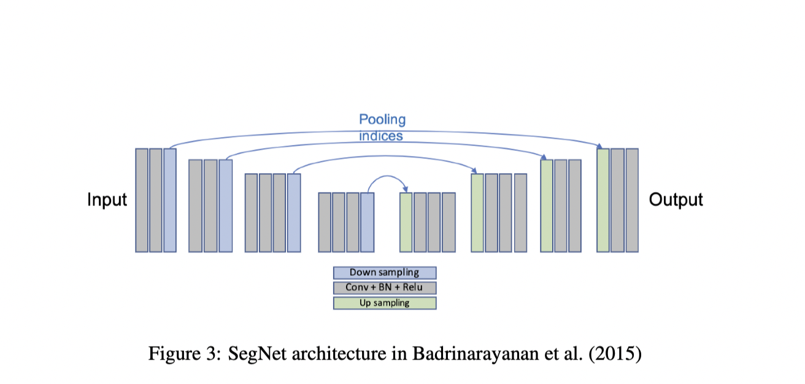
U-Net/V-Net
U-Net proposed by Ronneberger et al. (2015) were designed for biomedical image segmentation. Today, U-Net and its variations have been widely used within computer vision community for segmentation tasks, due to its outstanding performance. The novelty of U-Net is the skip-connection design (see Figure 4), which performs feature concatenation comparing to FCNs with feature fusion (feature addition). Skip-connections increases the accuracy of the model and resolves some gradient vanishing problems. A recent work of 3D variant of U-net named FracNet by Jin et al. (2020) achieves 92.9% sensitivity and an average false positive of 5.27 on rib fracture detection on CT volumes directly. Notably, the architectural design of V-Net proposed by Milletari et al. (2016) is merely the 3D version of U-Net with more skip-connections, usage of volumetric image as input, and optimization of Dice metrics.
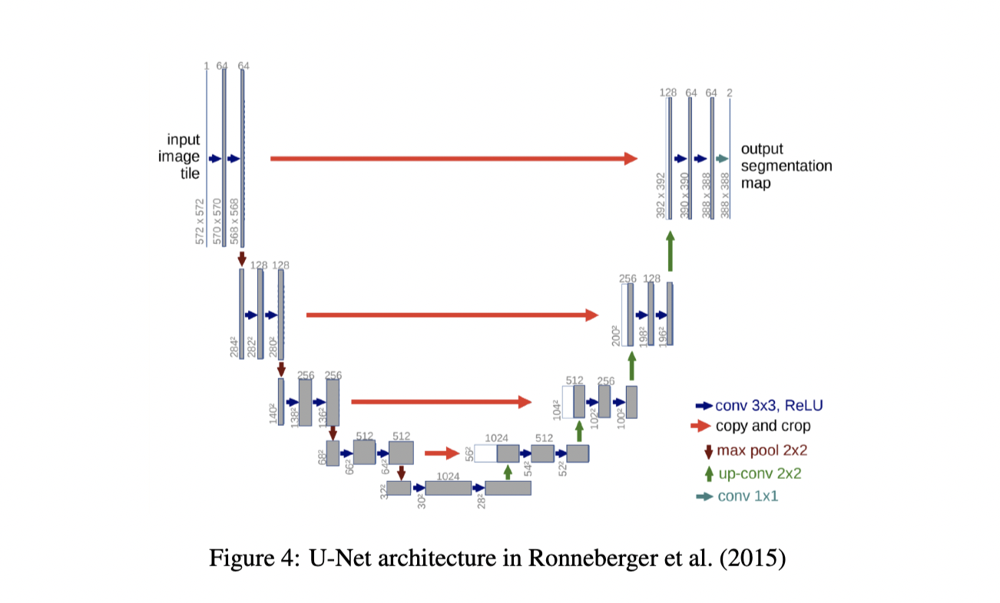
FC-DenseNet
Jegou et al. (2016) proposed Fully Convolutional DenseNet, which is also called Tiramisu by the author. The overall network architecture is based on U-Net, but with dense blocks used in DenseNet by Huang et al. (2016). By replacing convolution operations with dense blocks, it further deals with vanishing-gradient problem, strengthens feature propagation, and encourages feature reuse (see Figure 5). Even though the input of a dense block is not concatenated with its output in up-sampling path due to computational constraints, some information that is lost due to pooling operation can be passed by skip-connections from the down-sampling path. To my best knowledge, there hasn’t been much work of using FC-DenseNet on medical imaging segmentation of CT except Kolarik et al. (2019), but the experiment they performed was only on a small dataset with 10 CT scans.
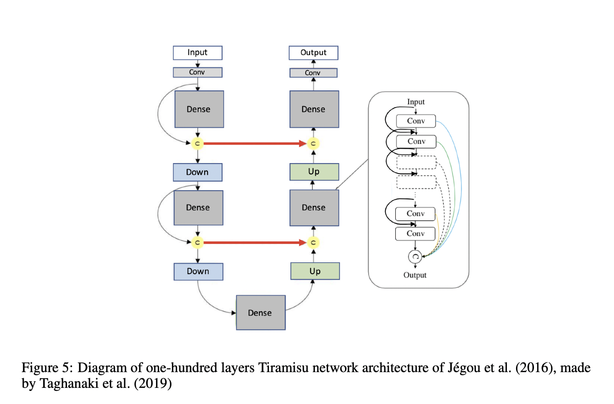
DeepLabs
DeepLabV1 by Chen et al. (2016) used deep convolutional neural network followed by a fully connected Conditional Random Field (CRF) as post-processing to refine the segmentation result. DeepLabV2 by the same group proposed atrous spatial pyramid pooling (ASPP) to capture the image context at multiple scales. DeepLabV3 added convolution of kernel size of 1x1 and employed global average pooling in order to avoid losing spatial dimensions during down-sampling. DeepLabV3+ (see Figure 6), as the latest version, added encoder-decoder architecture to expend DeepLabV3. Notably, DeepLabV3/V3+ gives up CRF because deep neural network has refined the segmentation result along object boundary. Since DeepLabV3+ reached SOTA performance, today people like to use it as comparison for segmentation tasks. Zhou et al. (2020) has come up with a variant of atrous convolution and achieved improved accuracy and less trainable parameters than DeepLabV3+ on right ventricle, left ventricle and aorta segmentation in CT imaging.
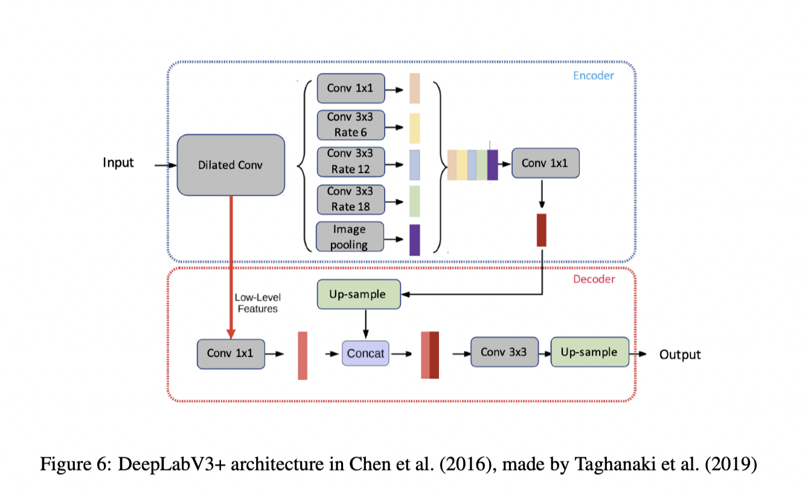
PSPNet
Zhao et al. (2016) proposed Pyramid Scene Parsing Network (PSPNet), and its novel pyramid pooling module (see Figure 7) can effectively generate sub-region feature maps on multiple scales in order to capture global context. Yang et al. (2018) combined pyramid pooling model and FCN in kidney and renal tumor segmentation of CT imaging, and their 3D_FCN_PPM network outperformed 2D PSPNet and 3D U-Net.
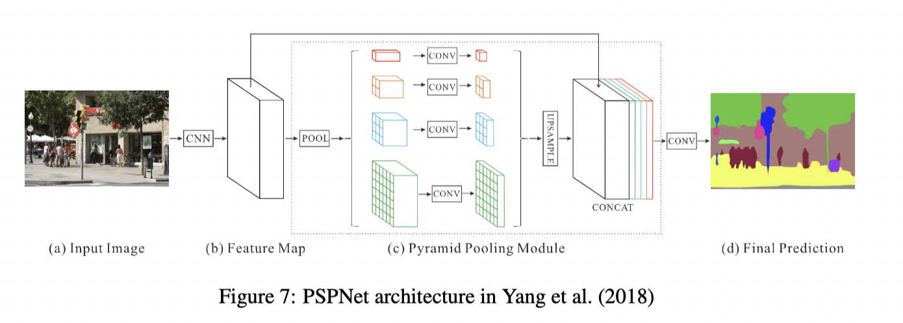
DRINet
To revolve vanishing-gradient problem existing in 3D U-Net and meanwhile make the network deep and wide, Chen et al. (2018) proposed Dense Residual Inception Net (DRINet). The gradient propagation was improved by both dense connections and residual connections, where residual blocks can aggregate feature maps from different branches and dense blocks can reuse previous feature maps and alleviate vanishing-gradient problems. In experiment, DRINet outperformed 3D FCNs in 2D CT slices of Cerebrospinal Fluid (CSF) segmentation.
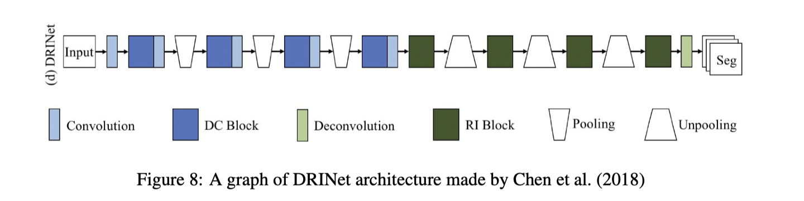
More Network Architectures Other than the basic architectural designs mentioned earlier in imaging segmentation domain, there are other innovative designs to improve performance as well. A good amount of papers in recent years such as Lian et al. (2018), Li et al. (2019), Nie et al. (2018) have attempted the attention-based medical imaging segmentation models. Furthermore, Khosravan et al. (2019) and Jin et al. (2018) have leveraged the concept of Generative Adversarial Network (GAN) to medical imaging segmentation in CT scans.
Loss Function Progession
Based on Distance
Weight Cross Entropy (WCE)
Cross Entropy is pixel-wise and examines each pixel individually, but it could be problematic when it comes to medical imaging due to class imbalanced problems. Therefore, Weight Cross Entropy was born to counteract a class imbalanced by introducing weights to loss function.
Balanced Cross Entropy (BCE)
In WCE, we can set to decrease false negative, or set
to decrease false positive. In order to weight negative pixels as well, BCE discussed by Xie and Tu (2015) can be used.
In the U-Net paper by Ronneberger et al. (2015), they added a distance learning function into BCE, to enforce the model to pick up the notion of distance, so that it has a better segmentation behavior even though two objects are close in images.
Focal Loss
To decrease the contribution of easily-segmented example and have the model focus on difficultly-segmented example, Lin et al. (2017) introduced Focal Loss by further improving BCE with additional term .
With larger , the contribution of the number of corresponding class to the loss function is higher; with larger
, the contribution of difficultly-segmented samples to the loss function is higher. When
, it’s equivalent to BCE. When
and
, it’s equivalent to CE.
Based on Overlap Measure
The most common way to measure overlap is by Intersection over Union (IoU).
where and
stand for predicted voxel-wise predicted label and groud truth respectively. This is the most straightforward overlap measure, and it has a range of
. If the
is closer to 1, then our prediction is closer to ground truth.
Dice Loss (DL)
In order to understand Dice Loss, one firstly have to understand Dice Coefficient (DC). DC is equivalent to F1-Score, and can be understood as adding to both denominator and numerator of Iou, so
and they’re positively correlated. Similarly, the range of DC is also
. Its expression is
So, it can be used to design DL as
represents the dot product between prediction volume and groud truth volume of each channel, which can effectively reset all voxels that are not in target mask to
due to binary segmentation;
is L1 norm, which is the sum of absolute value of each element in tensor. In order to simplify computation, it can be replaced by L2 norm
. Dice Loss were proposed in V-Net by Milletari et al. (2016), and it worked well for imbalanced class problem.
Tversky Loss (TL)
Tversky Loss by Salehi et al. (2017) is the generalization version of Dice Loss. In order to balance the influence of FP and FN toward loss function, TL added weights as following
Notably, if , then it’s equivalent to Dice Loss.
Combo Loss
Taghanaki et al. (2018) found the risk of using solely distance-based or IoU-based loss function, and introduced Combo Loss. In practices of CT imaging segmentation, it’s commonly seen that people like to use combo loss, because it’s more stable. If the foreground (object in medical domain) is too small and the background is dominating, then using focal loss or combo loss is more likely to guarantee good performance (see Figure 9), because as the IoU decreases (more false positives and false negatives) only focal loss and combo loss are monotone increasing, compared to the wave curves on other loss functions.
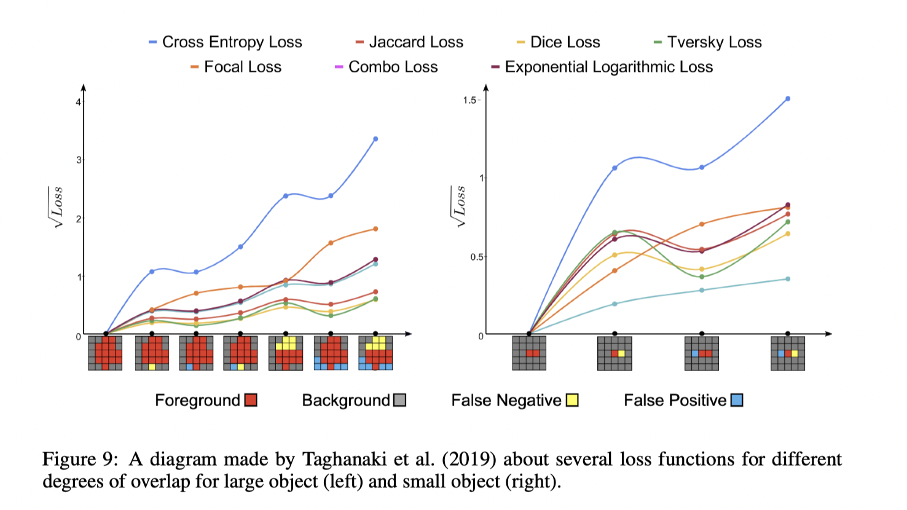
More Optimization Functions Other than the most commonly seen loss functions above for segmentation, there also are some other optimization functions for particular needs. Wong et al. (2018) introduced Exponential Logarithmic Loss which combines Exponential Logarithmic Dice Loss and Weight Exponential Cross Entropy to handle object-size imbalanced problems. Zhu et al. (2018) introduced Conservative Loss which aims to penalize the extreme cases and embrace the moderate cases in order to achieve good generalization. In short, there are three categories to optimize loss functions, which can be adapted to particular segmentation tasks depending on the needs. They’re weighting the objective loss function, optimizing the segmentation metrics, and adding regularization terms to the loss function.
Challenges and Future Directions
Since there are different imaging modalities and each may involves different levels of artifacts, as well as the fact that datasets of medical imaging are very limited, a promising direction is to work on transfer learning of pre-trained model in natural images and apply it in medical imaging segmentation. Raghu et al. (2019) in Google are proactively putting effort on this.
One can aim to creating large medical imaging datasets for segmentation benchmarks, so that researchers can accurately compare performance over different models. Yang et al. (2020) created MedMNIST that covers the primary data modalities in medical imaging analysis, which has great educational value and more accessible to general public; however, the size of each image (28 x 28) is doubtful for machines to learn the patterns of various diseases.
Many convolution-based neural networks are capable to extract features, but often miss small objects or edge information of big objects. If one tends to improve architectural design, this may be a promising direction; however, due to the improvement of Elsken et al. (2018), even the architectural designs might be carried out by the machines in the future.
Many studies including Drozdzal et al. (2017) have shown that pre-processing could be a key to improve the performance of segmentation network. In practices, most of the time deep learning scientist are trying to enhance the characteristics of the lesion areas according to the goal of the segmentation task. Moreover, the pre-processing could even be achieved by another neural network to build a multitask model (i.e., first detect then segment), and this is shown by Ke et al. (2019) and He et al. (2018).
More Directions It’s known that there are always class imbalanced problem and shortage of data in medical imaging domain, so one could focus on the Generative Adversarial Networks (GANs) for image synthesis, in order to fill out the dataset, and the studies of Chartsias et al. (2017) and Zhang et al. (2019) have shown that with the Magnetic Resonance Imaging (MRI) data synthesized from CT data it improve the segmentation performance of the models. There are also many times we may only have a few labels or annotated data, because having several radiologists to create an excellently annotated dataset with voting is not feasible in many cases, so one can develop a weakly supervised model like Amyar et al. (2020) and Kervadec et al. (2019)'s work. Notably, this direction is more likely to propose a good generalization over various segmentation targets.
Conclusion
This paper summarizes most of the intuitive useful modules/blocks of network architecture using in semantic segmentation, and for each of them provides a recent deployment in 3D CT imaging segmentation studies. Also, it gives a bird’s-eye view of some potential promising future directions to address certain challenges existing in medical imaging relatde to CT scans.
References
The paper was written in LaTex, so here are some screenshots of the references.
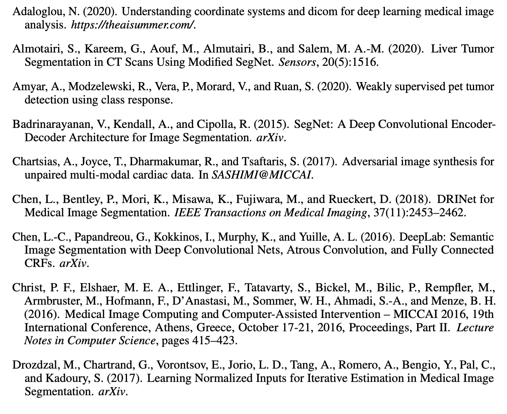
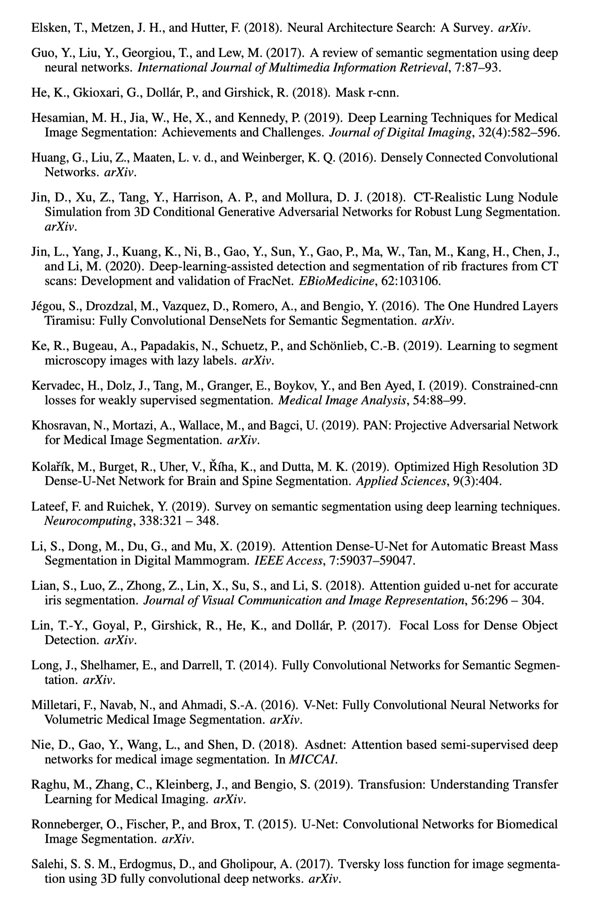
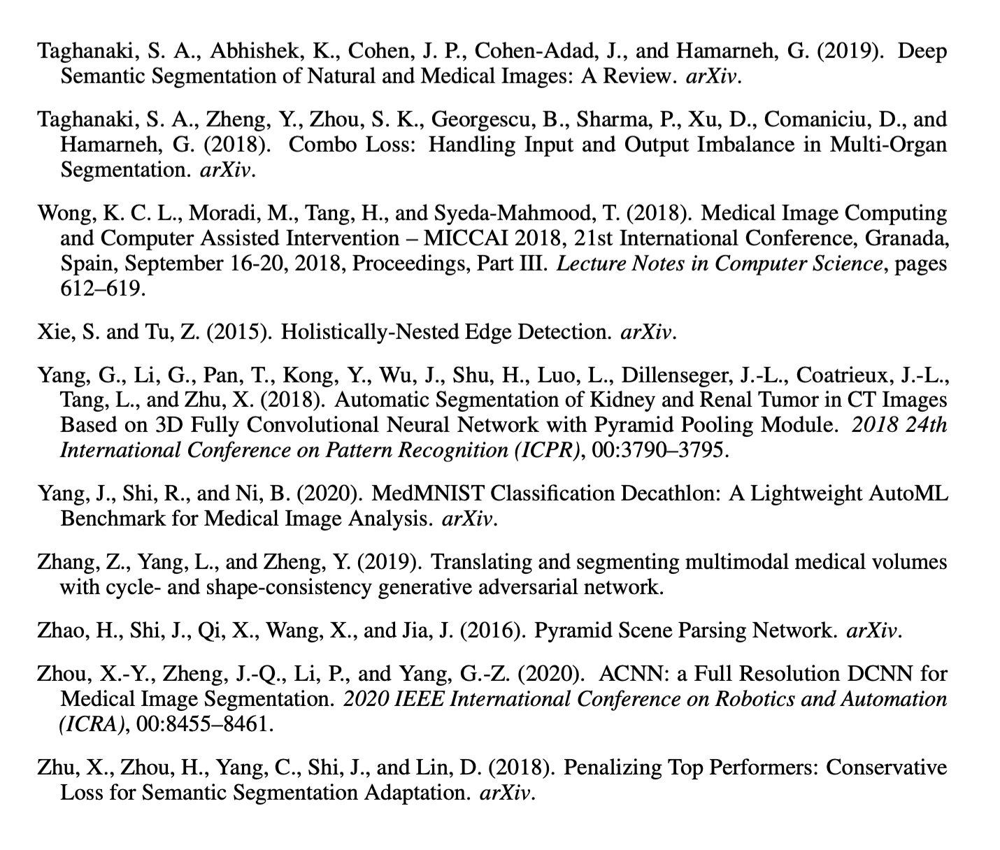